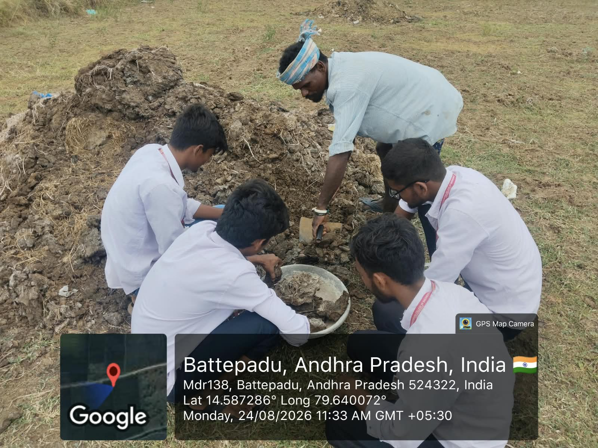
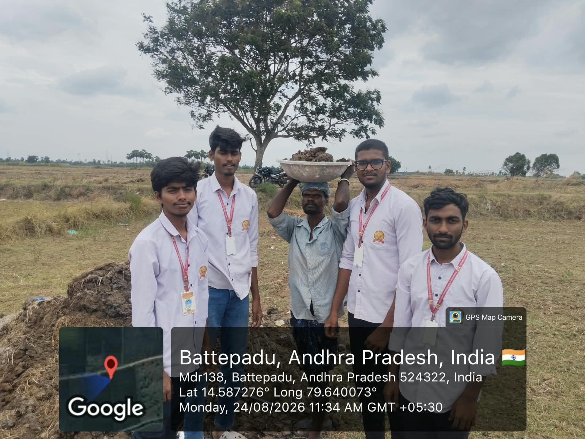
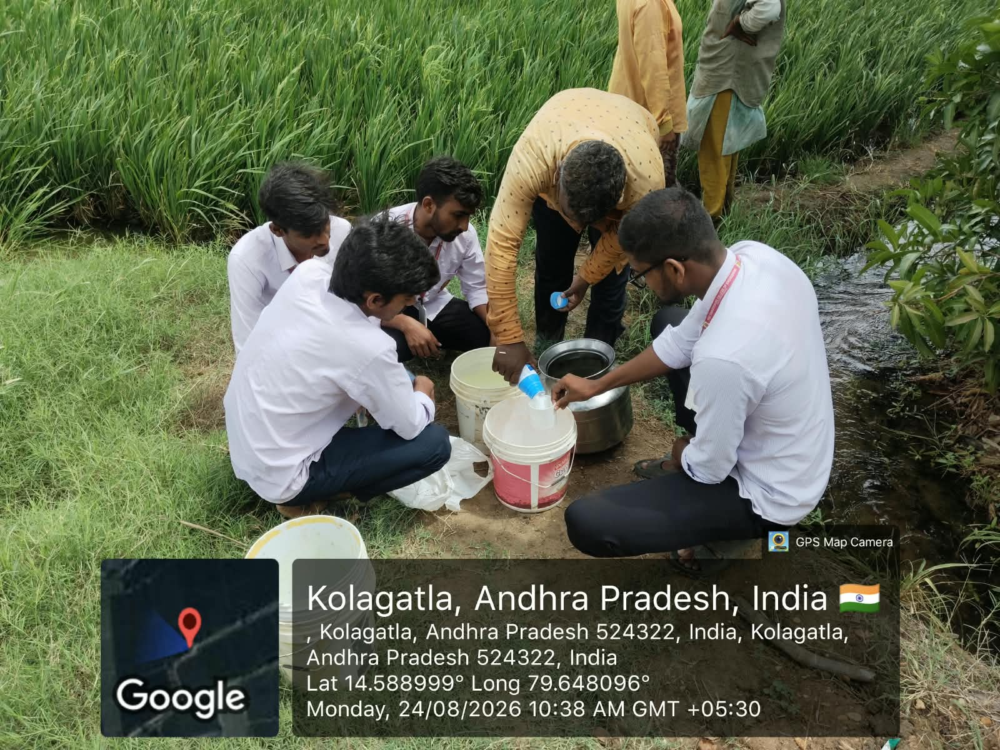
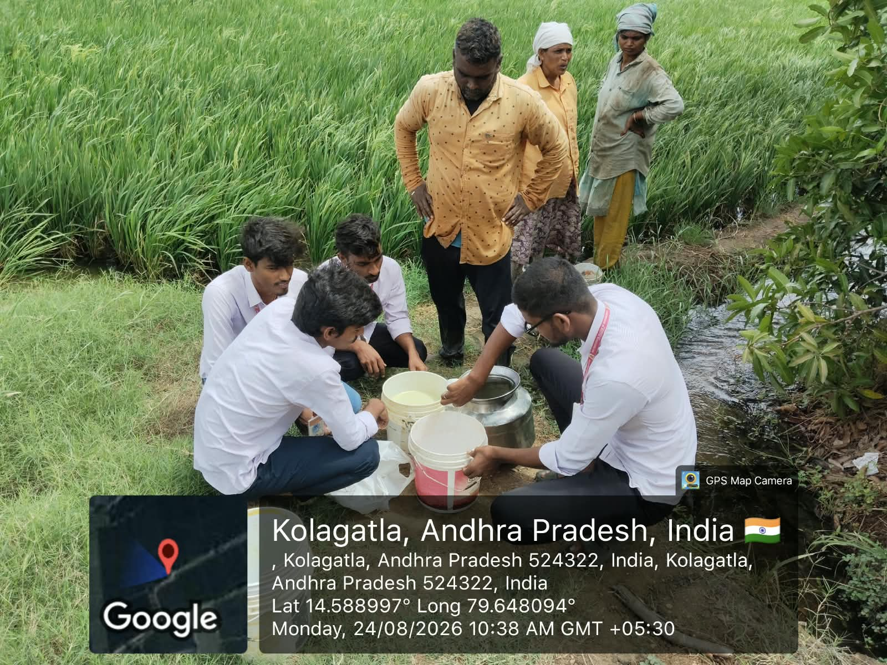
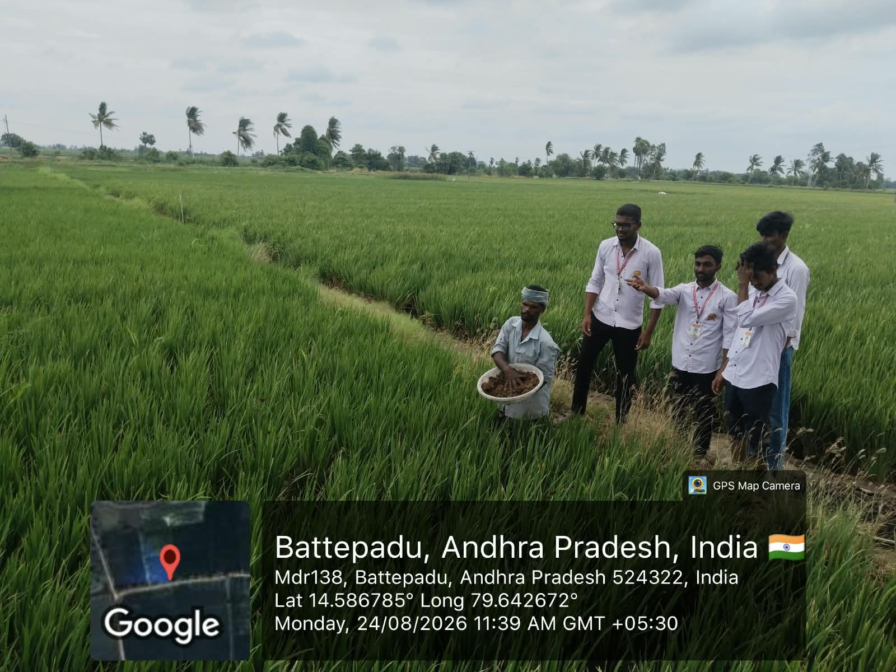
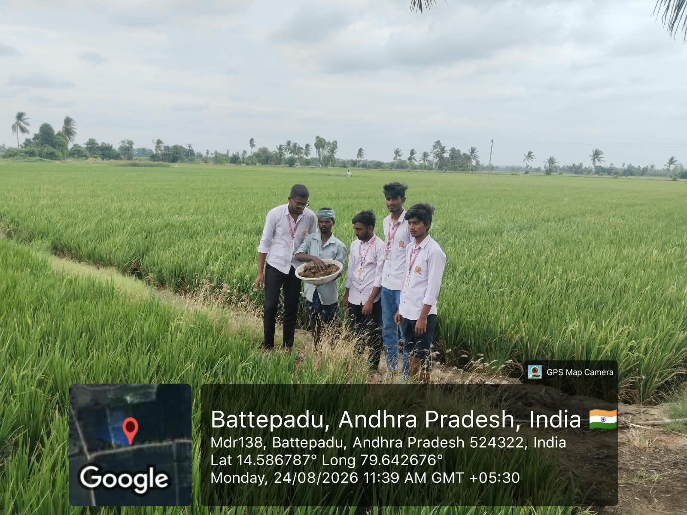

Community Service Project
Week 2 Report
Learning about natural manure, organic inputs and practical paddy-field work.
| Day | Activity | Observations / Notes |
|---|---|---|
| Day 1 | Visited paddy fields and met farmers. | Observed the field conditions and discussed the importance of natural inputs in organic paddy cultivation. |
| Day 2 | Observed the collection of natural manure. | Studied how buffalo dung and other organic material are collected and prepared for field use. |
| Day 3 | Learned about handling and carrying manure. | Observed the practical work involved in moving prepared manure from the collection area to the paddy field. |
| Day 4 | Observed preparation of a natural liquid input. | Worked with farmers near the field water source and learned how organic inputs are mixed and made ready for application. |
| Day 5 | Recorded field learning and evidence. | Discussed how manure and natural inputs improve soil fertility, support crop growth and reduce dependence on chemical inputs. |
Image Gallery





